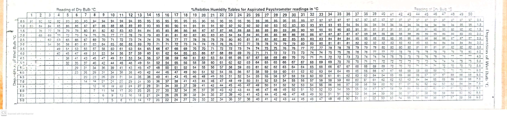
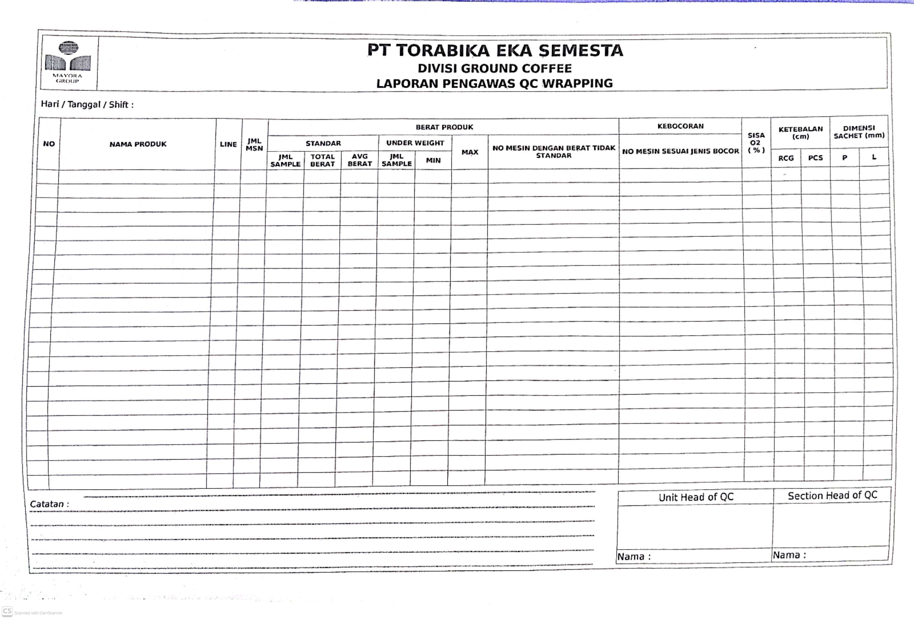

Mengkoordinir QC Field
Monitoring proses produksi
Mengevaluasi penyimpangan proses
Berkoordinasi dengan UH Produksi, Teknik terkait penyimpangan proses
Monitoring peralatan pengecekan qc
Sosialisasi, Briefing, Training qc field
- Mesin Packing Reguler 15 mesin/qc field
- Mesin Packing Emperor 10 mesin/qc field
- Mesin Packing High Speed 3 mesin/qc field
- Cleaning 20 mesin/qc field
- Meja Packing 10 meja/qc field
- Mesin Packing Horizontal 2-3 mesin/qc field
- Mesin Packing High Speed 3 mesin/qc field
- Gravity 1 qc field All Line
| KPI | Satuan | Standar KPI | APR 2026 | |||||
|---|---|---|---|---|---|---|---|---|
| A | B | C | D | E | Nilai | Poin | ||
| Quality Complaint | Komplain | 0 | ≤ 3 | ≤ 5 | ≤ 6 | > 6 | 1 | B |
| Konsistensi Produk & Rasa | % | 100 | ≥ 97.5 | ≥ 95 | ≥ 90 | < 90 | 100 | A |
| GKMF Closed Implementation | Tim | ≥ 5 | ≥ 4 | ≥ 3 | 1 | 0 | ||
| ISO Compliance | Temuan | 0 | ≤ 3 | ≤ 5 | ≤ 7 | > 7 | 0 | A |
| Training | Manhour | ≥ 1783 | ≥ 1528.5 | ≥ 1274 | ≥ 1019 | < 1019 | 2800 | A |
| KPI | Bobot | Standar KPI | ||||
|---|---|---|---|---|---|---|
| A | B | C | D | E | ||
| Quality Complaint | 25% | 0 | ≤ 3 | ≤ 5 | ≤ 6 | > 6 |
| Service Level Factory | 10% | 100 | ≥ 97.5 | ≥ 95 | ≥ 92.5 | < 92.5 |
| Konsistensi Produk & Rasa | 15% | 100 | ≥ 97.5 | ≥ 95 | ≥ 90 | < 90 |
| PIB Implementasi | 5% | 100 | ≥ 93 | ≥ 86 | ≥ 80 | < 80 |
| ISO Compliance | 15% | 0 | ≤ 3 | ≤ 5 | ≤ 7 | > 7 |
| K3 unsafe cond/action | 5% | 90 | ≥ 85 | ≥ 80 | ≥ 75 | < 75 |
| FIFO FG | 10% | 0 | ≤ 3 | ≤ 5 | ≤ 8 | > 8 |
| GKMF Closed Implementation | 10% | 1 (Ketua) | 0 | |||
| Training (kelas 1-3) | 2.5% | ≥ 1783 | ≥ 1528.5 | ≥ 1274 | ≥ 1019 | < 1019 |
| Training & Development Fullfillment (kelas 4 - FM) | 2.5% | 100% | ≥ 95% | ≥ 90% | ≥ 85% | < 85% |

Pembuatan form input suhu dan RH menggunakan aplikasi Memento Database

